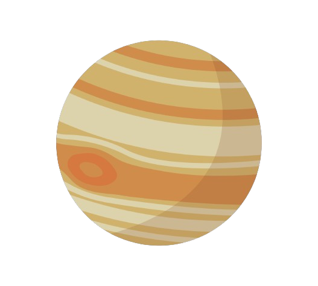

JÚPITER
Júpiter é o maior planeta do Sistema Solar, estando situado entre Marte e Saturno. Seu tamanho rende-lhe vários satélites naturais orbitando ao seu redor, cerca de 70. Durante a noite, esse planeta pode ser visto a olho nu, sendo a segunda estrela mais brilhante, atrás apenas de Vênus, o segundo planeta na ordem usando-se o Sol como referência."
